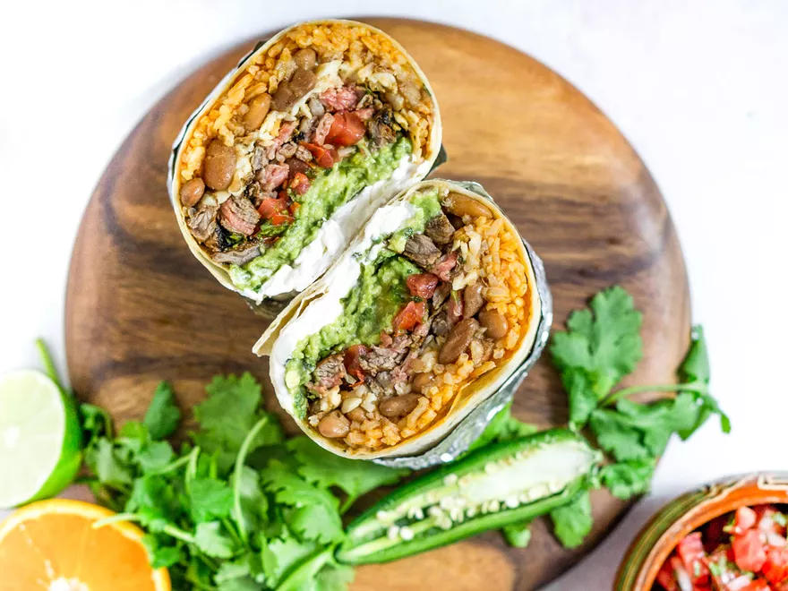

Mission-style Burrito

Description
In this recipe, I've recreated the Mission-style carne asada burrito. The
beef is marinated in a flavorful mix of orange and lime juices, garlic,
cilantro, cumin, and chipotle powder. It's a bit more streamlined than
Kenji's carne asada recipe, a deliberate choice since the burrito has so
many other components that will both take more of your time to prepare,
and also will cover up some of the finer points of his marinade. That
said, his recipe can be used here if you prefer.
Ingredients
For the Carne Asada:
- 1/2 cup (120ml) fresh orange juice (from about 3 navel oranges)
-
1/2 loosely packed cup (1.4 ounces; 40g) finely chopped cilantro leaves
and tender stems
- 4 medium garlic cloves, minced
- 2 tablespoons (30ml) fresh lime juice (from 1 lime)
- 1 tablespoon (15ml) extra-virgin olive oil
- 2 teaspoons whole cumin seeds, toasted and ground (see note)
- 2 teaspoons dried oregano, preferably Mexican
- 1 1/2 teaspoons chipotle powder (see note)
-
2 teaspoons (6g) Diamond Crystal kosher salt; for table salt use half as
much by volume or the same weight
-
1 1/2 pounds (680g) skirt steak, trimmed and cut with the grain into
roughly 5-inch lengths
For the Beans:
3 tablespoons (45ml) extra-virgin olive oil
1 medium (6-ounce; 180g) yellow onion, diced
3 medium cloves garlic, minced
2 teaspoons whole cumin seeds, toasted and ground (see note)
2 dried bay leaves
2 cups (14 ounces; 400g) dry pinto beans
6 cups homemade chicken stock or store-bought, low-sodium broth
Kosher salt
For the Rice:
2 tablespoons (30ml) neutral oil, such as sunflower, canola, or vegetable
1 1/4 cups (8.8 ounces; 250g) long grain rice, rinsed and drained
1 medium (6-ounce; 180g) yellow onion, finely diced
3 medium cloves garlic, minced
2 tablespoons tomato paste
2 1/4 cups (530ml) homemade chicken stock or store-bought, low-sodium
broth
1 teaspoon (3g) Diamond Crystal kosher salt; for table salt use half as
much by volume or the same weight
To Cook Carne Asada and Assemble Burritos:
Neutral oil, such as canola, vegetable, or sunflower, for greasing the
skillet
Six 12- to 13-inch flour tortillas
1 pound (455g) shredded Monterey Jack cheese
1 recipe guacamole
1 recipe pico de gallo, drained of excess liquid
Sour cream, as needed
Steps
-
For the Carne Asada Marinade: In a 1-gallon zipper-lock bag, combine orange juice, cilantro, garlic, lime juice, olive oil, cumin, oregano, chipotle powder, and salt. Seal bag and lightly shake to thoroughly combine ingredients.
-
Open bag, add steak, then reseal the bag, pressing out excess air. Marinate in refrigerator for at least 3 and up to 8 hours, turning bag once halfway through.
-
Meanwhile, for the Beans: In a medium pot or Dutch oven, heat olive oil over medium-high heat until shimmering. Add onion and cook, stirring, util softened and just starting to brown, about 6 minutes. Stir in garlic, cumin, and bay leaves and cook until fragrant, about 30 seconds.
-
Add beans, chicken stock, and a large pinch of salt and bring to a boil over high heat. Reduce to a bare simmer, cover, and cook until beans are just tender, about 2 hours 30 minutes; add water at any point to keep beans covered.
-
Remove lid and continue cooking, stirring occasionally, until beans are very soft and creamy, about 45 minutes longer; top up with water as needed to keep beans just covered. Once beans are fully softened, allow liquid to reduce into a rich, creamy broth. Season with salt, if needed. Discard the bay leaves. Leave covered until ready to serve, or transfer to an airtight container and refrigerate until ready to use; reheat before using.
-
For the Rice: In a medium pot or Dutch oven, heat olive oil over medium-high heat until shimmering. Add rice and cook, stirring constantly, until very lightly toasted, about 2 minutes. Stir in onion and garlic and cook, stirring, until onion is just starting to soften and lightly brown, about 4 minutes. Stir in tomato paste and cook until slightly darkened, about 1 minute.
- Add chicken stock and bring to boil. Reduce heat to bare simmer, cover, and cook for 15 minutes without disturbing. Remove from heat and let stand, covered, for 10 minutes. Uncover rice and gently fluff with a fork. Cover and keep warm until ready to use.
- To Cook Carne Asada and Assemble Burritos: Remove skirt steak from marinade and blot dry. Light one chimney full of charcoal. When all the charcoal is lit and covered with gray ash, pour out and arrange the coals on one side of the charcoal grate. Set cooking grate in place, cover grill, and allow to preheat for 5 minutes. Alternatively, set half the burners on a gas grill to the highest heat setting, cover, and preheat for 10 minutes. Clean and oil the grilling grate. (For directions using a skillet, see note.)
- Place steak directly over the hot side of the grill. If using a gas grill, cover; if using a charcoal grill, leave open. Cook, turning occasionally, until steak is well charred on outside and center registers 120°F (50°C) on an instant-read thermometer, 5 to 10 minutes total.
- Transfer skirt steak to a cutting board and allow to rest for 5 minutes. Slice thinly against the grain into 1/2-inch-thick slices, then cross-cut the slices into 1/2-inch cubes.
- Working 1 tortilla at a time and using a pastry brush, lightly brush tortilla all over on one side with water. In a dry nonstick pan, warm tortilla, wet side down, over medium heat until warmed on first side and excess water has cooked off. Brush top side with water, then flip tortilla, add a generous sprinkle of cheese all over, and cook until cheese begins to melt. Transfer tortilla to a clean work surface.
- Being careful not to overfill, spread an even layer of rice on top of tortilla, leaving at least 2 inches of border on either side and at least 3 inches of border above and below. Spoon beans on top of rice, followed by additional cheese, then the carne asada, guacamole, pico de gallo, and sour cream. Fold the tortilla sides in over the filling. Then roll the bottom flap of tortilla up over the filling, holding the sides tight as you roll. Continue rolling until the burrito is sealed. Wrap in foil for a tighter hold. Repeat with remaining tortillas and fillings, wiping out skillet between uses. Serve right away.